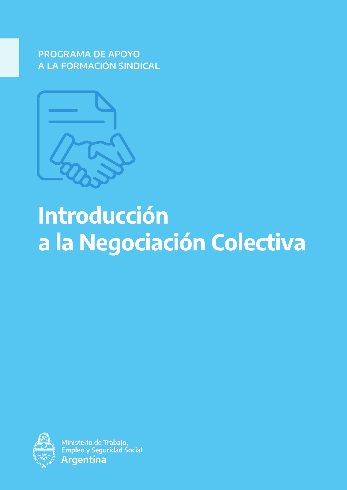
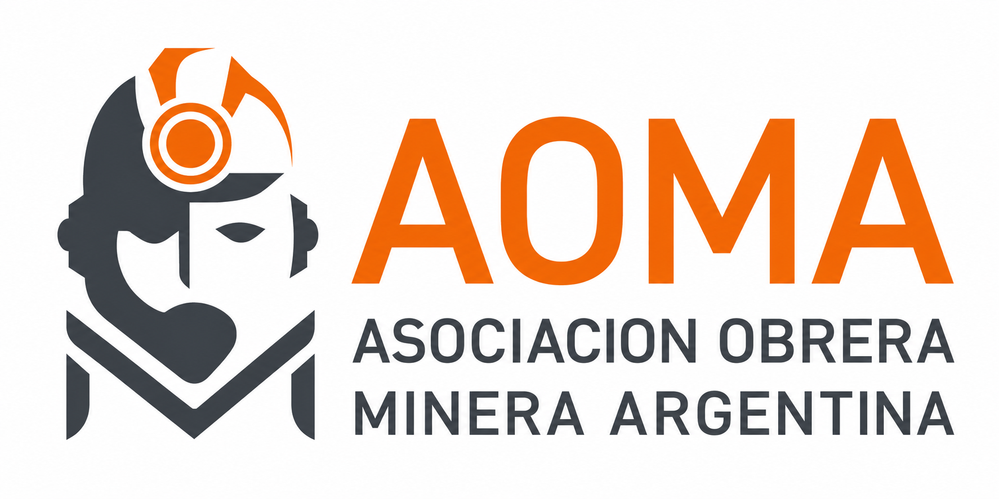

Escritorio sindical
Buenos días
Tu espacio para consultar, aprender y organizar el trabajo diario.
AOMA Seccional San Juan
Tu espacio para consultar, aprender y organizar el trabajo diario.
Continuar formación
Comprendé los actores, el marco normativo y las etapas de una negociación colectiva.
Acciones rápidas
Documentos frecuentes
Conocé nuestra organización
Historia, propósito y estructura de AOMA a nivel nacional y provincial.
Representar y defender los derechos de las trabajadoras y los trabajadores mineros, fortaleciendo la organización, la formación y la participación sindical.
Consolidar una organización moderna, federal y preparada para afrontar los desafíos del trabajo y la actividad minera.
Nuestra historia
El 28 de octubre se constituye la Asociación Obrera Minera Argentina, fecha que identifica el Día del Obrero Minero.
Se consolidan instrumentos centrales para la regulación laboral de las distintas ramas de la actividad minera.
AOMA San Juan impulsa una plataforma integral de gestión, capacitación y asistencia para dirigentes y delegados.
Centro de Conocimiento
Encontrá legislación y convenios por número, título, empresa o palabra clave.
Probá con otra palabra o modificá el filtro.
Formación sindical
Cursos claros, progresivos y vinculados con la práctica cotidiana.

FORMACIÓN SINDICALCURSO 001 · PROGRAMA DE APOYO A LA FORMACIÓN SINDICAL
Una capacitación para comprender el derecho a negociar colectivamente, preparar la intervención sindical y participar con fundamentos en cada etapa del proceso.
Trabajo diario
La base de las herramientas para actas, minutas, agenda y recordatorios.
Preparado para crear actas institucionales con participantes, temario y resoluciones.
Próximo sprintRegistro breve y ordenado de reuniones, compromisos y responsables.
Próximo sprintReuniones, vencimientos y recordatorios sincronizados con el trabajo sindical.
Próximo sprintPlantillas institucionales para notas, pedidos, denuncias y presentaciones.
Próximo sprintDatos personales
Actualizá contacto, seguridad y apariencia.
Apariencia
La preferencia se guarda en este dispositivo.

Sistema Integral de Gestión, Capacitación y Asistencia
Estimado compañero:
Te damos la bienvenida a SIGCA, la plataforma de formación, consulta y gestión de AOMA Seccional San Juan.
Este espacio fue creado para acompañar la labor diaria de nuestros dirigentes y delegados, facilitando el acceso a capacitación, legislación, convenios colectivos y herramientas de gestión sindical.
Esperamos que contribuya al fortalecimiento de nuestra organización y a una mejor representación de los trabajadores mineros.
Fraternalmente,
Iván Marcelo Malla
Secretario General · AOMA Seccional San Juan
Escuela Sindical
CURSO 001 · AOMA SECCIONAL SAN JUAN
Comprendé cómo se construye una negociación colectiva, quiénes participan, qué normas la regulan y cómo debe prepararse la organización sindical para intervenir con legitimidad, información y estrategia.
Documento